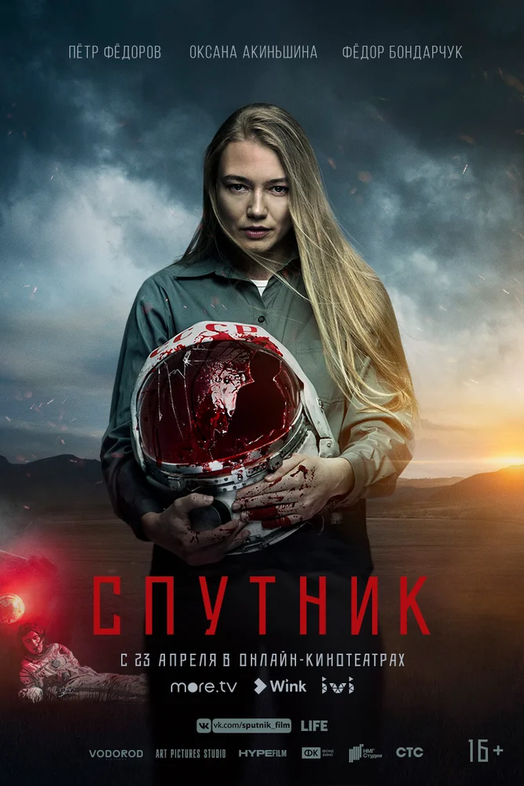
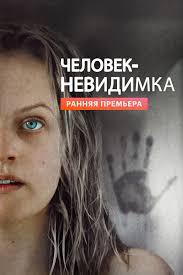

- 
Премьера: 16 апреля 2020 г.
Режиссер: Егор Абраменко
Продюсеры: Фёдор Бондарчук, Михаил Врубель
Сценарий: Олег Маловичко, Андрей Золотарёв
СССР, 1983 год. Советский космонавт-герой Владимир
Вешняков привозит на землю инопланетное существо…
в собственном теле. В секретной лаборатории закрытого
режимного города нейрофизиолог Татьяна Климова пытается
спасти космонавта от чудовища, обнаруживая, что
испытывает к своему пациенту куда больше, чем
профессиональный интерес.
- 
Премьера: 24 февраля 2020 г.
Режиссер: Ли Уоннелл
На основе: Человек-невидимка
Бюджет: 7 миллионов USD
Автор идеи: Ли Уоннелл
На первый взгляд жизнь Сесилии кажется безупречной:
огромный дом, бойфренд — гениальный ученый-миллионер.
Но никто не знает, что на самом деле происходит за
высокими стенами роскошного особняка… И даже идеально
спланированный побег оказывается ловушкой.
Невозможно спрятаться от преследователя, которого не видишь. 
Премьера: 20 февраля 2020 г.
Режиссер: Константин Викторович Буслов
Продюсер: Сергей Бодров
Сценарий: Сергей Бодров
В основе проекта судьба легендарного изобретателя АК-47
Михаила Тимофеевича Калашникова. Нелегкие испытания выпали
на долю конструктора-самоучки прежде чем он осуществил
свою мечту. Калашников был командиром танка в 1941-м,
получил тяжелое ранение под Брянском, а после так и
не смог вернуться на войну. Пока был в госпитале — мечтал,
делал первые чертежи оружия в блокноте и не переставал
корить себя за то, что отсиживается в тылу. Он работал
на заводе, проводил первые испытания в Казахстане и
участвовал во Всесоюзных оружейных конкурсах вместе
с другими конструкторами. В свои 29 он создал оружие,
которое принесло ему мировую славу — АК-47! Калашников
прожил долгую и интересную жизнь, но одна мысль не
оставляла его в покое: «Появись такое оружие у нас тогда,
в сорок первом — война бы закончилась гораздо раньше и
многие из наших парней остались бы живы».

Премьера: 19 февраля 2020 г.
Режиссер: Крис Сандерс
Бюджет: 125–150 млн $
Год: 2020
Сборы: 107,6 млн $
История Бэка, дружелюбного пса, чья размеренная
домашняя жизнь перевернулась с ног на голову во
времена золотой лихорадки в 1880-х, когда его
вырвали из дома в Калифорнии и перевезли в дикую
и холодную Аляску. Будучи новичком в упряжке
почтовой службы, а впоследствии лидером, Бак
попадает в невероятное приключение, находит свое
место в мире и становится хозяином своей жизни.